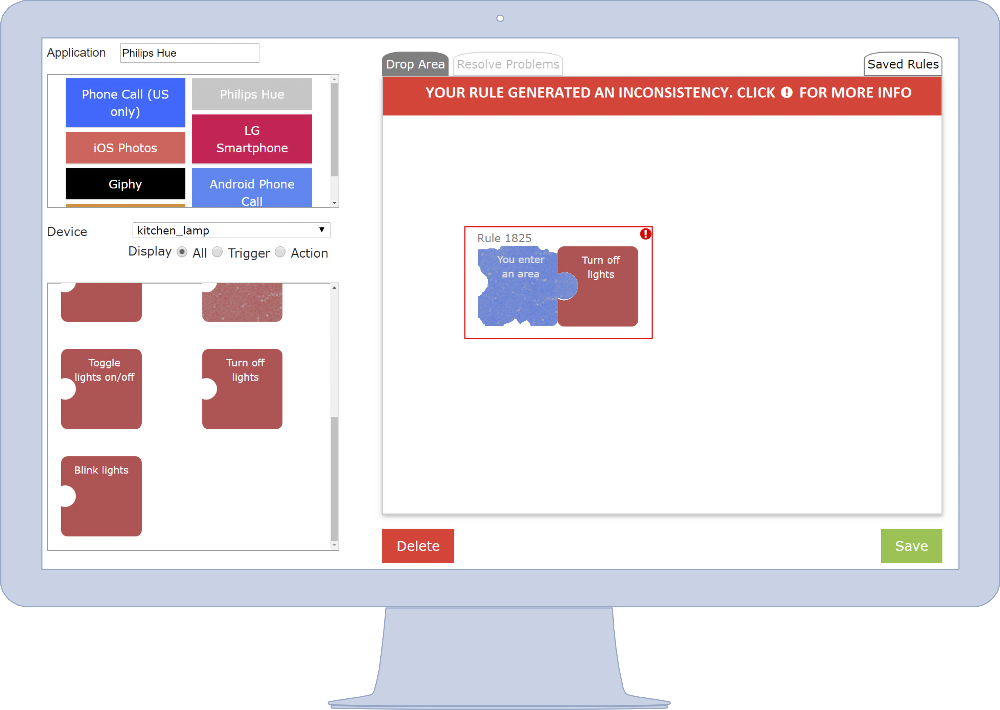

Debugging Trigger-Action Rules

We explored the urgent need of assessing the correctness of IF-THEN rules. Problems in trigger-action programs, indeed, negatively influence users’ ability to correctly predict the outcomes of trigger-action programs, and can lead to unpredictable and dangerous behaviors, e.g., a door that is unexpectedly unlocked. To investigate end-user debugging in the trigger-action programming context, we presented two end-user debugging tools, namely EUDebug and My IoT Puzzle.
- EUDebug
- EUDebug is an end-user debugging tool built on top of an IFTTT-like interface that enables end users to debug their IF-THEN rules at composition time. It assists users in identifying rule conflicts, and it allows them to foresee the runtime behavior of their rules through step-by-step simulation. To model and check the run-time behavior of IF-THEN rules, we defined a novel formalism, named SCPN, based on Petri Nets and the EUPont model. With the help of EUDebug, users can successfully face computer-related concepts such as loops, inconsistencies, and redundancies. The step-by-step simulation, in particular, helps users understand why their rules might generate a specific problem.
- My IoT Puzzle
-
My IoT Puzzle is an end-user debugging tool to compose and debug IF-THEN rules based on the Jigsaw metaphor. As EUDebug, it exploits the SCPN formalism, and it is based on a set of design guidelines extracted from the literature. My IoT Puzzle represents triggers and actions as complementary puzzle pieces, and it provides users with different real-time feedback, textual and graphical explanations, by following established theories such as the interrogative debugging paradigm. The usage of different representations and visual languages facilitates users in analyzing problems and helps them understand, identify, and correct errors in IF-THEN rules.
References
- Empowering End Users in Debugging Trigger-Action Rules, Fulvio Corno, Luigi De Russis, and Alberto Monge Roffarello, Proceedings of the 2019 CHI Conference on Human Factors in Computing Systems (CHI ‘19) [pdf]
- My IoT Puzzle: Debugging IF-THEN Rules Through the Jigsaw Metaphor, Fulvio Corno, Luigi De Russis, and Alberto Monge Roffarello, IS-EUD: the 7th International Symposium on End-User Development [pdf]
- A Debugging Approach for Trigger-Action Programming, Fulvio Corno, Luigi De Russis, and Alberto Monge Roffarello, Proceedings of the 2018 CHI Conference Extended Abstracts on Human Factors in Computing Systems (CHI ‘18) [pdf]